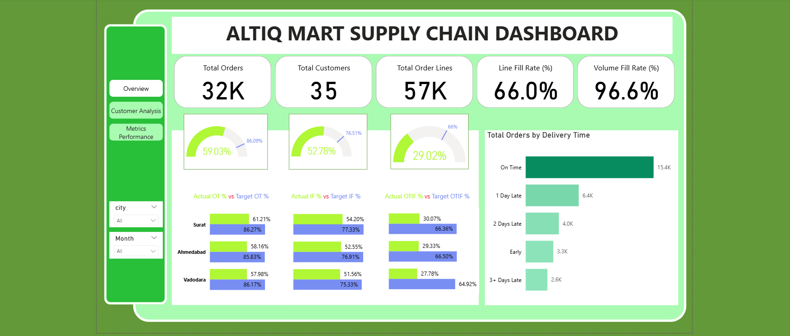

AtliQ Mart Supply Chain Dashboard
Power BI dashboard to track OTIF delivery performance and optimize service levels across cities, customers, and products

Overview Dashboard - Summary and City Insights
Project Overview
- Objective: Monitor and improve On-Time, In-Full, and OTIF delivery performance across cities, customers, and products using real-time metrics and visual analytics.
- Tools Used: Power BI, Power Query, DAX, Dimensional Modeling
Problem Statement
AtliQ Mart, an FMCG company based in Gujarat, observed that some key customers were not renewing their contracts due to poor delivery experiences. Suspecting consistent delays or incomplete deliveries, the supply chain team needed a robust dashboard to monitor 'On-Time', 'In-Full', and 'OTIF %' metrics daily. The goal was to identify service gaps, improve reliability, and ensure readiness for expansion to larger cities.
Dashboards & Visualizations
Dashboard 1: Overview
Summary KPIs, delay distribution and City Performance
- Total Orders, Total Order Lines, Total Customers
- Overall LIFR %, VOFR %, OT %, IF %, OTIF %
- Delivery delay buckets and average delay (days)
- OT %, IF %, OTIF % vs target by city
Dashboard 2: Customer Split
Customer-level delivery reliability analysis
- Matrix with OT %, IF %, OTIF %, LIFR %, VOFR %
- Best and Worst Performing Cities
- Customer segmentation bubble chart
Dashboard 3: Metric Performance
- Daily and Monthly trend of OT %, IF %, OTIF %, LIFR %, VOFR %
- Metric selector to toggle visuals
- Product-level LIFR % and VOFR % with sparklines
Key Insights
- All three cities underperformed across OT %, IF %, and OTIF %, with OTIF % falling well below the target.
- Products like AM Butter and AM Tea showed consistent under-delivery trends, requiring intervention in supply planning.
- Several high-volume customers had poor OTIF %, indicating a high risk of churn if not addressed quickly.
- Repeat delays of 1–3 days were observed across thousands of orders, pointing to systemic fulfillment issues.